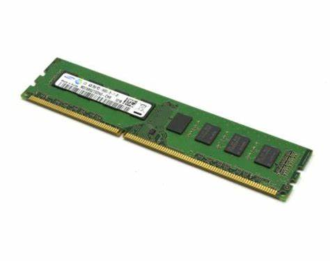

Ram is the part in the computer were the math that the CPU is being stored short-term. You can think of RAM like a desk. There is only a limited amount of space, and you use that desk to write down what you are doing. You can store stuff on it, like paper, pencil, eraser etc. You use that desk to get your work done. But if someone came along and cleared that desk, and put your stuff in the trash, you would lose your work, RAM is like that desk. When you need to restart your computer, you wipe the RAM of the things it was storing, and your computer forgets what it was doing.
